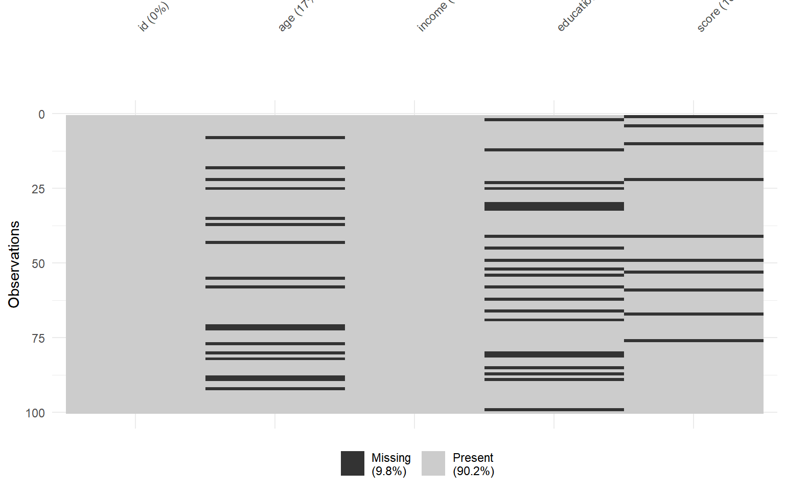
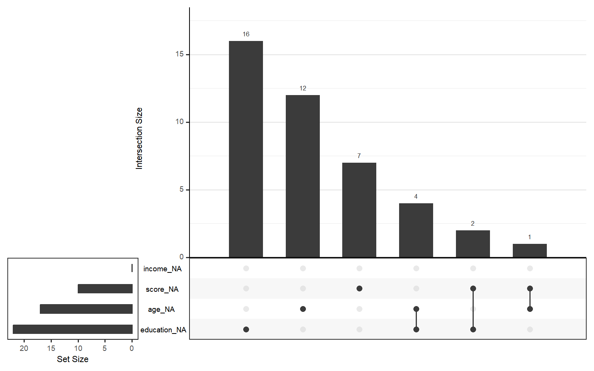
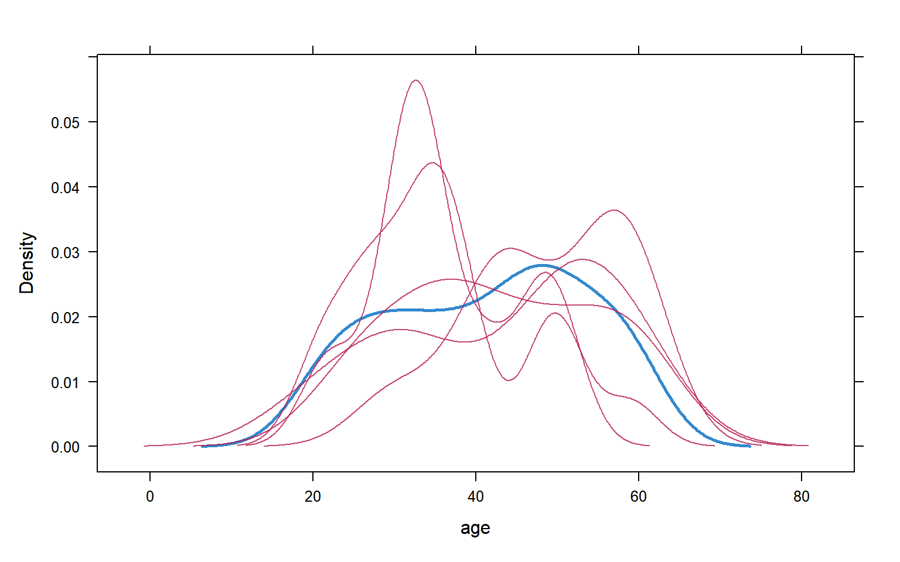
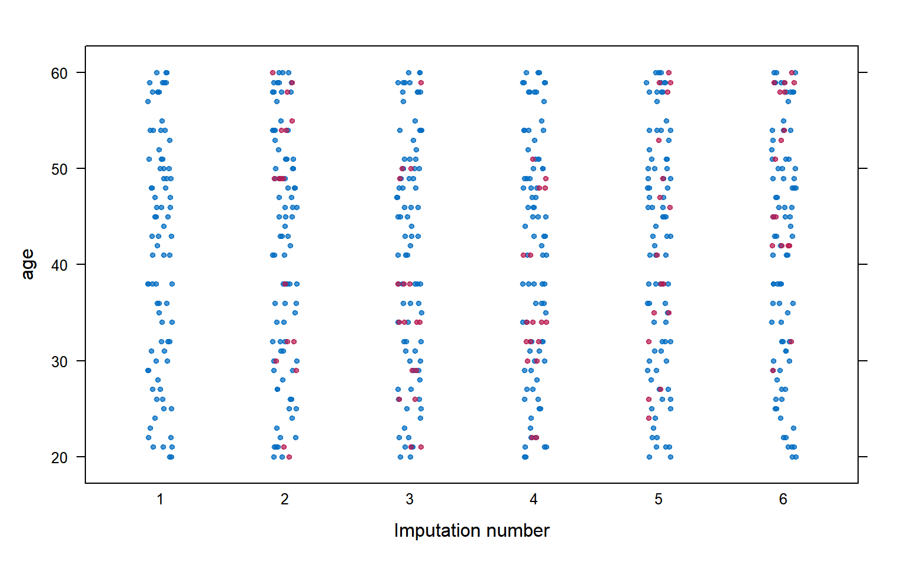

library(dplyr)
library(tidyr)
library(ggplot2)
library(naniar) # 缺失值可视化
library(mice) # 多重插补
theme_set(theme_bw(base_size = 12))缺失值处理完全指南
R语言方法
数据处理
缺失值
缺失值问题概述
缺失数据是数据分析中最常见的问题之一。正确处理缺失值对于获得可靠的统计推断至关重要。
缺失机制分类
| 类型 | 全称 | 含义 | 处理难度 |
|---|---|---|---|
| MCAR | Missing Completely At Random | 完全随机缺失 | 易 |
| MAR | Missing At Random | 随机缺失（依赖其他变量） | 中 |
| MNAR | Missing Not At Random | 非随机缺失（依赖缺失值本身） | 难 |
安装与加载
第一部分：缺失值检测
基础检测
# 创建含缺失值的示例数据
set.seed(42)
df <- data.frame(
id = 1:100,
age = sample(c(20:60, NA), 100, replace = TRUE, prob = c(rep(0.02, 41), 0.18)),
income = sample(c(3000:10000, NA), 100, replace = TRUE),
education = sample(c("高中", "本科", "硕士", NA), 100, replace = TRUE),
score = rnorm(100, 75, 10)
)
df$score[sample(1:100, 10)] <- NA
# 基础统计
sum(is.na(df)) # 总缺失数[1] 49colSums(is.na(df)) # 每列缺失数 id age income education score
0 17 0 22 10 mean(is.na(df$age)) # 缺失比例[1] 0.17使用 naniar 包
# 缺失值摘要
miss_var_summary(df)# A tibble: 5 × 3
variable n_miss pct_miss
<chr> <int> <num>
1 education 22 22
2 age 17 17
3 score 10 10
4 id 0 0
5 income 0 0# 缺失模式
miss_case_summary(df) %>% head()# A tibble: 6 × 3
case n_miss pct_miss
<int> <int> <dbl>
1 22 2 40
2 25 2 40
3 41 2 40
4 49 2 40
5 58 2 40
6 80 2 40可视化缺失模式
# 缺失值热图
vis_miss(df)
# 缺失模式图
gg_miss_upset(df)
第二部分：简单处理方法
删除法
# 删除含NA的行（listwise deletion）
df_complete <- na.omit(df)
nrow(df_complete)[1] 58# 删除特定列NA
df_drop <- df %>% drop_na(age, income)
nrow(df_drop)[1] 83注意：删除法可能导致样本量大幅减少，仅在MCAR时无偏。
均值/中位数填充
# 均值填充
df_mean <- df %>%
mutate(
age = ifelse(is.na(age), mean(age, na.rm = TRUE), age),
income = ifelse(is.na(income), median(income, na.rm = TRUE), income)
)
# 使用 coalesce（类型更安全）
df_filled <- df %>%
mutate(
age = coalesce(as.numeric(age), mean(age, na.rm = TRUE)),
score = coalesce(score, median(score, na.rm = TRUE))
)众数填充（分类变量）
# 计算众数
get_mode <- function(x) {
x <- x[!is.na(x)]
ux <- unique(x)
ux[which.max(tabulate(match(x, ux)))]
}
df_mode <- df %>%
mutate(education = replace_na(education, get_mode(education)))第三部分：多重插补（mice）
多重插补是处理MAR缺失的推荐方法。
基本流程
# 准备数据（只保留数值和因子）
df_mice <- df %>%
select(-id) %>%
mutate(education = as.factor(education))
# 执行多重插补
imp <- mice(df_mice, m = 5, method = "pmm", seed = 123, print = FALSE)查看插补方法
# 查看使用的方法
imp$method age income education score
"pmm" "" "pmm" "pmm" | 方法 | 适用类型 | 说明 |
|---|---|---|
pmm |
数值型 | 预测均值匹配（默认，推荐） |
logreg |
二分类 | 逻辑回归 |
polyreg |
多分类 | 多项式回归 |
norm |
数值型 | 正态分布 |
提取填充数据
# 提取第1个填充数据集
complete_data <- complete(imp, 1)
head(complete_data) age income education score
1 58 3081 高中 61.20594
2 59 9039 硕士 78.94024
3 35 9000 本科 98.57299
4 54 3913 高中 85.02741
5 45 7420 本科 69.16584
6 38 8741 高中 90.15203# 提取所有填充数据（长格式）
all_complete <- complete(imp, "long")
head(all_complete) age income education score .imp .id
1 58 3081 高中 61.20594 1 1
2 59 9039 硕士 78.94024 1 2
3 35 9000 本科 98.57299 1 3
4 54 3913 高中 85.02741 1 4
5 45 7420 本科 69.16584 1 5
6 38 8741 高中 90.15203 1 6对多重填充数据建模
# 在每个填充数据上拟合模型
fit <- with(imp, lm(score ~ age + income + education))
# 合并结果（Rubin规则）
pooled <- pool(fit)
summary(pooled) term estimate std.error statistic df p.value
1 (Intercept) 7.404672e+01 6.9154562 10.70742407 17.03977 5.498145e-09
2 age 9.067433e-03 0.1131493 0.08013686 20.74002 9.368966e-01
3 income 3.979805e-05 0.0005595 0.07113145 64.39950 9.435136e-01
4 education高中 -9.112156e-01 2.9949723 -0.30424843 41.03858 7.624761e-01
5 education硕士 -2.663010e+00 3.3300225 -0.79969717 29.82645 4.302095e-01第四部分：可视化填充效果
密度图比较
# 比较原始与填充后的分布
densityplot(imp, ~age)
条带图
stripplot(imp, age ~ .imp, pch = 20)
第五部分：实战案例
完整分析流程
# 1. 检查缺失模式
miss_var_summary(df)# A tibble: 5 × 3
variable n_miss pct_miss
<chr> <int> <num>
1 education 22 22
2 age 17 17
3 score 10 10
4 id 0 0
5 income 0 0# 2. 可视化
vis_miss(df)
# 3. 多重插补
df_for_imp <- df %>%
select(-id) %>%
mutate(education = as.factor(education))
imp_final <- mice(df_for_imp, m = 5, seed = 42, print = FALSE)# 4. 分析
model <- with(imp_final, lm(score ~ age + income))
result <- pool(model)
summary(result) term estimate std.error statistic df p.value
1 (Intercept) 7.498242e+01 5.4938190447 13.64850515 64.91050 9.619010e-21
2 age -2.613209e-02 0.0933574612 -0.27991431 81.89762 7.802490e-01
3 income -2.794975e-05 0.0006272327 -0.04456042 28.11975 9.647726e-01# 5. 提取最终数据
final_data <- complete(imp_final, action = "long", include = TRUE)常用代码速查
# 检测
sum(is.na(df))
colSums(is.na(df))
naniar::miss_var_summary(df)
# 可视化
naniar::vis_miss(df)
naniar::gg_miss_upset(df)
# 简单处理
df %>% drop_na() # 删除NA行
df %>% replace_na(list(x = 0)) # 填充固定值
df %>% mutate(x = replace_na(x, mean(x, na.rm = TRUE)))
# 多重插补
imp <- mice(df, m = 5, method = "pmm")
complete(imp, 1) # 提取填充数据
fit <- with(imp, lm(y ~ x)) # 建模
pool(fit) # 合并结果小结
缺失值处理策略选择：
| 情况 | 推荐方法 |
|---|---|
| 缺失<5%，MCAR | 删除法 |
| 缺失较多，MAR | 多重插补（mice） |
| 时间序列 | 线性插值 |
| 需要快速预览 | 均值/中位数填充 |
最佳实践：始终报告缺失情况，并进行敏感性分析验证结果稳健性。